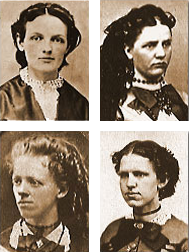
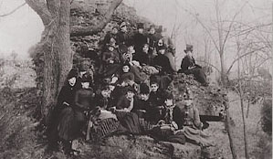
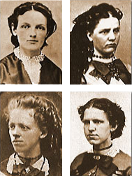
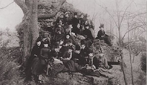

Theta Beginnings
Bettie Locke, the daughter of a professor was among the first women to enroll at Indiana Asbury in 1867. During her sophomore year, a member of one of the Greek-letter fraternities asked Bettie to wear their badge. When she learned, however, she would not become a member simply a welcomed supporter of the group she declined the opportunity.
Desiring full membership in an organization offering friendship and support, Bettie hoped a Greek-letter fraternity for women might form a chapter at Asbury. However, she couldnet identify such an organization existing on any other campus. With her fatheres encouragement, Bettie decided to create one. From the beginning, it was her desire the organization would continue to grow, supporting coeds on multiple campuses into the future. She asked fellow student Alice Allen to work with her to make the dream come true.
Gamma Theta Chapter of Kappa Alpha Theta
One of the oldest sororities on the Carnegie Mellon University campus, the Carnegie Mellon Gamma Theta chapter of Kappa Alpha Theta was officially installed on April 29th, 1944. Since then, the chapter has grown to average around 90 members with new member classes of about 30. We have consistently been receiving highest sorority GPA, leadership involvement, Greek Sing, and Booth awards. Their tasks included designing a badge, developing a constitution and bylaws, and identifying potential members women of outstanding character determined to excel academically. The following autumn, Hannah Fitch and Bettie Tipton were invited to join them. Now, four in number, the women carefully completed their plans. On January 27, 1870, the first official meeting of Kappa Alpha Theta was held.
And so, the first Greek-letter fraternity for women was formally established. Obviously meeting a need, the Fraternity grew exponentially spreading East and West, from North to South, and becoming the first fraternity for women to establish a chapter in Canada. It was an idea whose time had come.
History from kappaalphatheta.org.
Bettie Locke, the daughter of a professor was among the first women to enroll at Indiana Asbury in 1867. During her sophomore year, a member of one of the Greek-letter fraternities asked Bettie to wear their badge. When she learned, however, she would not become a member simply a welcomed supporter of the group she declined the opportunity.
Desiring full membership in an organization offering friendship and support, Bettie hoped a Greek-letter fraternity for women might form a chapter at Asbury. However, she couldnet identify such an organization existing on any other campus. With her fatheres encouragement, Bettie decided to create one. From the beginning, it was her desire the organization would continue to grow, supporting coeds on multiple campuses into the future. She asked fellow student Alice Allen to work with her to make the dream come true.
Gamma Theta Chapter of Kappa Alpha Theta
One of the oldest sororities on the Carnegie Mellon University campus, the Carnegie Mellon Gamma Theta chapter of Kappa Alpha Theta was officially installed on April 29th, 1944. Since then, the chapter has grown to average around 90 members with new member classes of about 30. We have consistently been receiving highest sorority GPA, leadership involvement, Greek Sing, and Booth awards. Their tasks included designing a badge, developing a constitution and bylaws, and identifying potential members women of outstanding character determined to excel academically. The following autumn, Hannah Fitch and Bettie Tipton were invited to join them. Now, four in number, the women carefully completed their plans. On January 27, 1870, the first official meeting of Kappa Alpha Theta was held.
And so, the first Greek-letter fraternity for women was formally established. Obviously meeting a need, the Fraternity grew exponentially spreading East and West, from North to South, and becoming the first fraternity for women to establish a chapter in Canada. It was an idea whose time had come.
History from kappaalphatheta.org.
© Kappa Alpha Theta • Gamma Theta Chapter • 2013